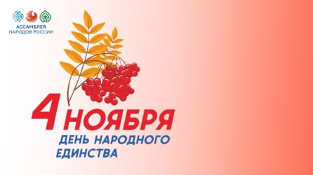

Сетевая интерактивная викторина «Братских народов союз вековой»
Вместе с тем, разработки в области радиоастрономии и эксплорации космических волн позволяют ученым проникнуть в более глубокие слои космоса. Это обеспечивает новые данные о черных дырах, туманностях и космических явлениях, которые ранее оставались за гранью нашего понимания. Таким образом, с каждым новым наблюдением мы приближаемся к пониманию самых завораживающих тайн Вселенной.
В период с 23 октября по 3 ноября 2023 г. региональное отделениеАссамблеи народов России Тюменской области проходит сетевуюинтерактивную викторину «Братских народов союз вековой», направленнуюна укрепление единства и духовной общности многонационального народаРоссийской Федерации.Реализация настоящей викторины призвана способствовать взаимномуобогащению культур, сохранению этнокультурного многообразия народов,проживающих в Российской Федерации и формированию образа Россиикак страны с историко-культурологической значимостью.Приглашаем принять участие в викторине, задания которой будутразмещены на сетевом информационном портале Ассамблеи народов России.
Вместе с тем, разработки в области радиоастрономии и эксплорации космических волн позволяют ученым проникнуть в более глубокие слои космоса. Это обеспечивает новые данные о черных дырах, туманностях и космических явлениях, которые ранее оставались за гранью нашего понимания. Таким образом, с каждым новым наблюдением мы приближаемся к пониманию самых завораживающих тайн Вселенной.
В период с 23 октября по 3 ноября 2023 г. региональное отделениеАссамблеи народов России Тюменской области проходит сетевуюинтерактивную викторину «Братских народов союз вековой», направленнуюна укрепление единства и духовной общности многонационального народаРоссийской Федерации.Реализация настоящей викторины призвана способствовать взаимномуобогащению культур, сохранению этнокультурного многообразия народов,проживающих в Российской Федерации и формированию образа Россиикак страны с историко-культурологической значимостью.Приглашаем принять участие в викторине, задания которой будутразмещены на сетевом информационном портале Ассамблеи народов России.